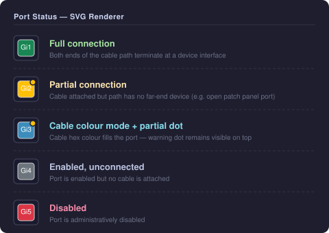

SVG Renderer¶
The SVG renderer produces a scalable <svg> element from a YAML layout. It is available when a DeviceView has:
- Render Mode set to
svg - A non-empty YAML Layout field
If either condition is not met, the plugin silently falls back to CSS rendering.
Enabling SVG mode¶
Set Render Mode → SVG on the DeviceView edit page. The field is available at Plugins → Device Views → [edit].
Note
Virtual Chassis devices render as one SVG panel per member (in rack order), each using that member's own device type's DeviceView — see Virtual Chassis. SVG mode requires every member's device type to have a YAML-layout DeviceView; if any member is missing one, the whole device falls back to CSS.
Port status colours¶
Each port is coloured at page load by a small JavaScript snippet based on its connection state. The SVG renderer emits only the structural skeleton; no colours are baked into the SVG source.

States¶
| State | Colour | Condition |
|---|---|---|
| Full connection | Green #198754 |
connected_endpoints resolves to a far-end device interface |
| Partial connection | Yellow #ffc107 + dot |
Cable attached but path does not resolve to a device (e.g. switch → patch panel → open outlet) |
| Enabled, unconnected | Grey #6c757d |
Port is enabled, no cable attached |
| Disabled | Red #dc3545 |
Port is administratively disabled |
Partial connection indicator¶
A partially connected port has a cable attached (link_peers is non-empty) but the cable path does not reach a far-end device (connected_endpoints is empty). This is typical of:
- A switch port patched to a patch panel whose far end is not yet connected
- A port with a cable terminated at a wall outlet or keystone jack
The partial state is shown with:
- A yellow fill on the port rect (in status-colour mode)
- A small warning dot (yellow circle with dark stroke) in the top-right corner of the port rect — always visible, even when cable colour mode overrides the fill colour
Cable colour mode¶
The Cable Colors checkbox on the device view page toggles cable colour mode. When enabled:
- Each port is filled with the hex colour of its attached cable
- Ports with a cable that has no colour set are shown with a grey/black diagonal stripe pattern
- The partial connection dot overlay is still rendered on top, so the partial state remains visible regardless of the cable colour
SVG output structure¶
<svg class="dv-svg" viewBox="0 0 W H" xmlns="...">
<defs>
<!-- diagonal stripe pattern for cables with no colour set -->
<pattern id="dv-nocolor-pattern" .../>
</defs>
<!-- canvas background -->
<rect class="dv-canvas-bg" .../>
<!-- port elements — status classes added by JS at page load -->
<g class="dv-port {stylename}" data-stylename="{stylename}" tabindex="0" role="button">
<title>{stylename}</title>
<rect class="dv-port-rect" .../>
<text class="dv-port-label" .../>
</g>
...
</svg>
CSS classes¶
| Class | Applied to | Meaning |
|---|---|---|
dv-svg |
<svg> |
Outer SVG element |
dv-face-front / dv-face-rear |
<svg> |
Patch panel face identifier |
dv-canvas-bg |
<rect> |
Canvas background |
dv-port |
<g> |
Any clickable port element |
{stylename} |
<g> |
Derived port name — used by JS to apply status |
dv-port-rect |
<rect> |
Port fill rectangle |
dv-port-label |
<text> |
Abbreviated port label |
dv-spacer |
<rect> |
Spacer element |
dv-blank |
<rect> |
Blank decorative element |
dv-label |
<text> |
Standalone text label |
bg-success |
<g> |
Added by JS: full connection (green) |
bg-warning |
<g> |
Added by JS: partial connection (yellow) |
bg-secondary |
<g> |
Added by JS: enabled, unconnected (grey) |
bg-danger |
<g> |
Added by JS: disabled (red) |
nocolor |
<g> |
Added by JS: cable with no colour set (stripe pattern) |
dv-partial-dot |
<circle> |
Added by JS: partial connection dot overlay |
Coordinate formula¶
| Constant | Value | Description |
|---|---|---|
PADDING |
6 px | Outer margin inside the SVG viewport |
GAP |
2 px | Gap between cells |
CORNER_RADIUS |
3 px | Border radius on port rects |
FONT_SIZE |
7 px | Port label font size |
DEFAULT_CELL |
32 px | Cell size used when cell_size = 0 (patch panels) |
Patch panels¶
Patch panels produce two <svg> elements — one with data-face="front" and one with data-face="rear". Both are rendered side by side in a flex wrapper.
Use cell_size: 0 in the YAML canvas to enable auto sizing for patch panels.
Limitations¶
- Virtual Chassis SVG rendering requires every member's device type to have an SVG-capable DeviceView (see above) — one missing member falls the whole device back to CSS
cell_size: 0(patch-panel auto sizing) usesDEFAULT_CELL = 32 pxin SVG mode since CSSautosizing has no SVG equivalent